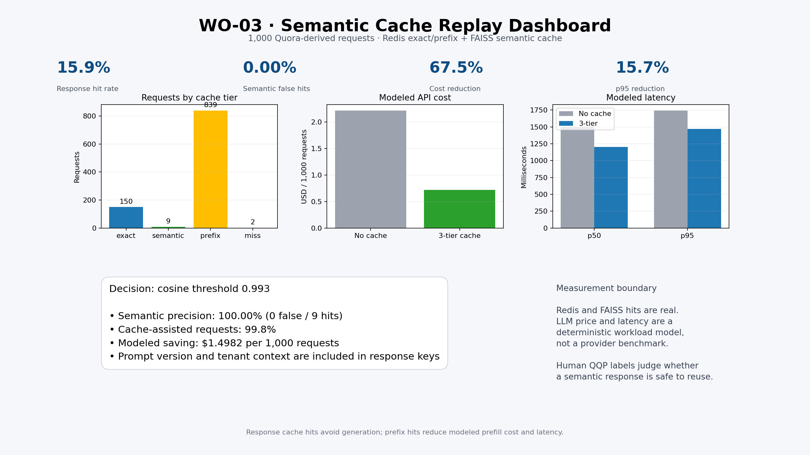
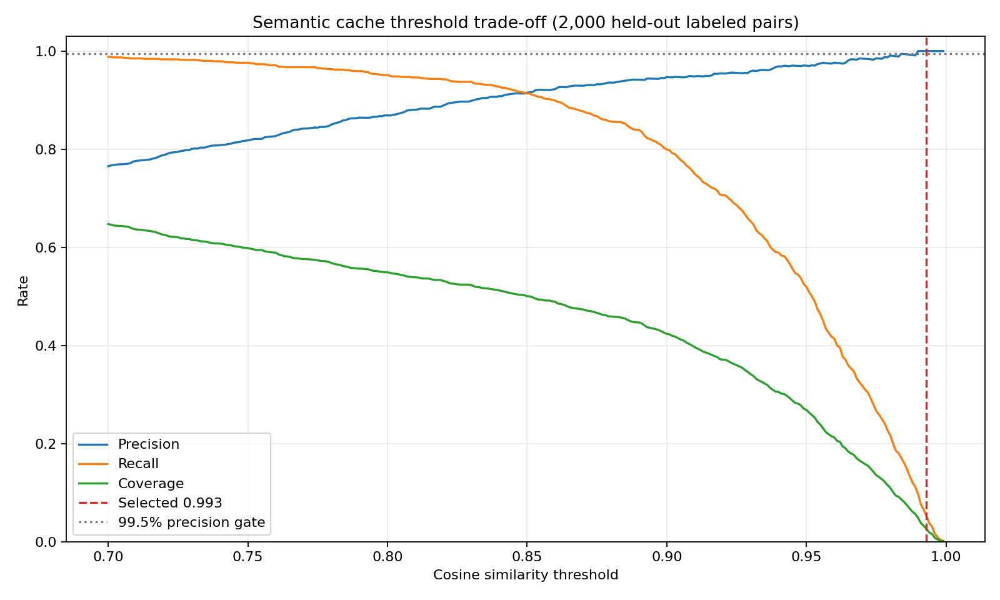

WO-03 · Semantic Cache Replay
1,000 Quora-derived requests · selected cosine threshold 0.993
0.00%
Semantic false-hit rate
67.5%
Modeled cost reduction
15.7%
Modeled p95 reduction


Redis and FAISS cache behavior is executed. LLM price and latency use a deterministic simulation and are not provider measurements.